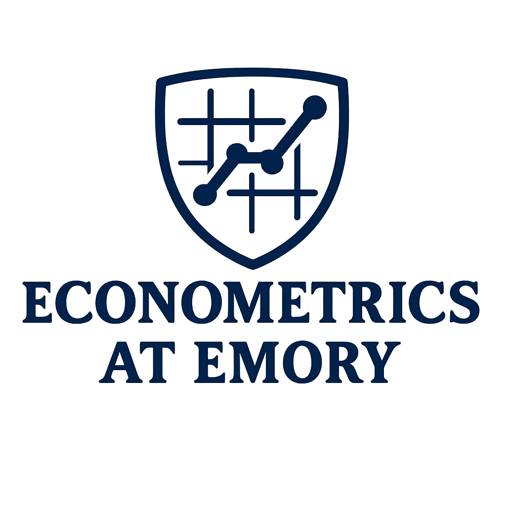

Econometrics in Emory
Causal Inference with Panel Data
May 2–3, 2025
Emory University, Atlanta GA
Emory University, Atlanta GA
| Home | Registration | Program | Directions | Flyer |

The Economics Department at Emory University is happy to announce “Econometrics in Emory: Causal Inference with Panel Data.” Econometrics in Emory is a new iniative that aims to bring together econometricians in academia and industry to discuss the latest developments in Econometrics and related fields. Each year, the workshop will focus on a specific theme, with the goal of fostering a community of researchers interested in the same topics. This year, the workshop will focus on Causal Inference with Panel Data.
A unique feature of the Econometrics in Emory workshop is the connection between academia and industry. The workshop will feature presentations from leading researchers in academia, as well as practitioners from industry. This will provide a unique opportunity for participants to learn about the latest research in the field, as well as how it is being applied in practice. This will allow for a rich exchange of ideas and experiences, and will help bridge the gap between academia and industry.
The workshop will feature presentations from leading researchers in academia and industry. Prof. Guido Imbens, Professor of Economics at Stanford University and the 2021 Nobel Laureate in Economics, will be the keynote speaker for the inaugural workshop. Other confirmed participants include Prof. Alberto Abadie (MIT), Prof. Sokbae Lee (Columbia University), Prof. Xiaohong Chen (Yale University), Prof. Ismael Mourifie (Washington University in St. Louis), Prof. Peter Hull (Brown University), Prof. Lihua Lei (Stanford GSB), Prof. Pedro H. C. Sant'Anna (Emory University), Prof. Brantly Callawau (University of Georgia), Prof. Davide Viviano (Harvard University), Prof. Liyang Sun (UCL/CEMFI), and Prof. Dmitry Arkhangelsky (CEMFI). From the industry side, we will have presentations from Apoorva Lal (Netflix), David Arbour (Adobe Research), Enrique Pinzon (Stata), Maggie Wang (YouTube), and Qing Wu (Google). Amazon will also have a presence.
Econometrics in Emory: Causal Inference with Panel Data is being organized by Pedro H. C. Sant'Anna, with the support of the Econometrics group, and the amazing Staff at the Department of Economics of Emory University. The organizers are very grateful for support from the following sponsors:
|
|

|
|